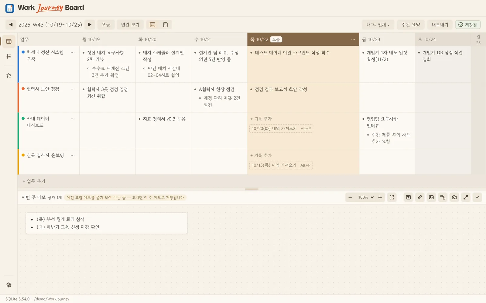
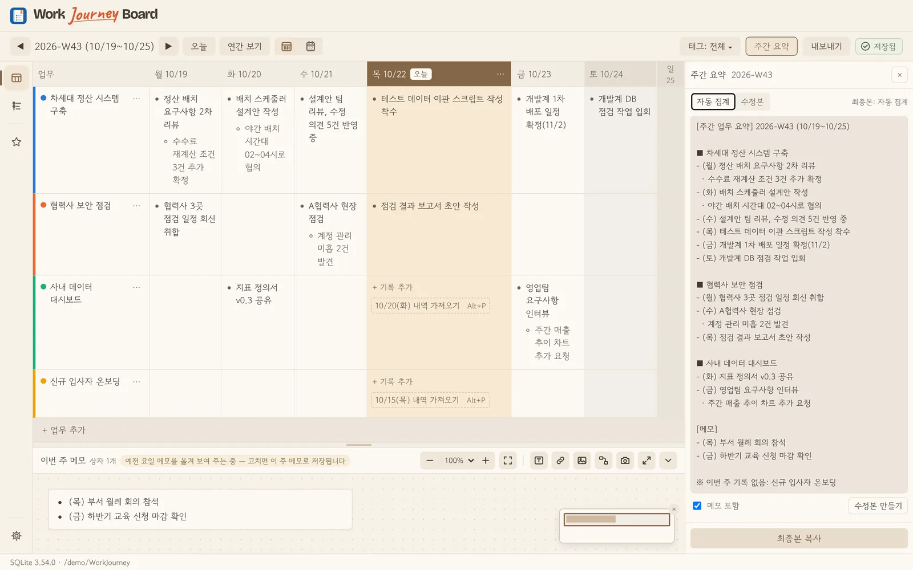
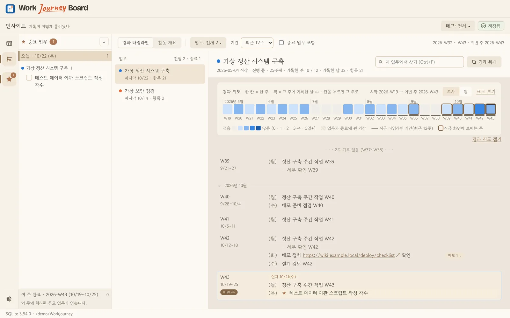
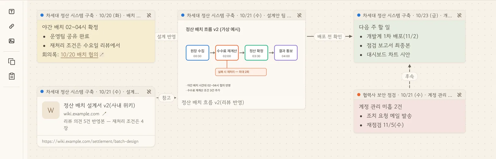
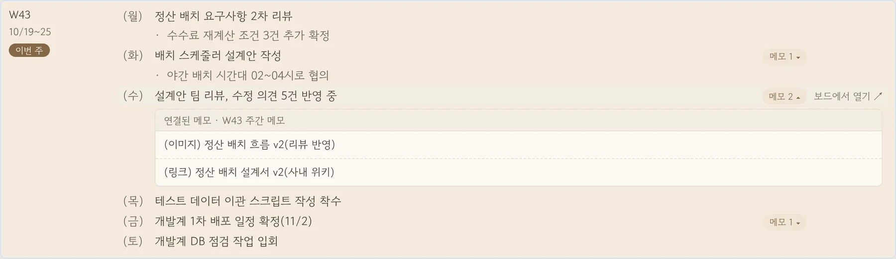

01 · 기록
매일 2분, 키보드만으로
요일과 업무가 만나는 칸에 개조식으로 적습니다. Enter로 다음 줄, Tab으로 세부 항목, ↓로 다음 업무. 오늘 열은 늘 눈에 띄고, 비어 있는 칸은 직전 기록을 한 번에 가져올 수 있어요.
중요 표시매주 반복주간 메모 보드


바쁜 하루, 업무를 짧게 적어두세요.
기록이 쌓이면 한 주의 요약과 지나온 과정이
자연스럽게 이어집니다.
가상 기록을 활용한 화면 예시입니다.
A PLACE FOR YOUR WORK ✳
하루하루 흩어지기 쉬운 업무를
한 주의 보드에 차곡차곡.
계획표보다 자유롭게.
일지보다 한눈에.
01 WRITE IT DOWN
업무별로 나누어진 주간 보드에 생각나는 대로 한 줄씩. 중요한 항목을 표시하고, 관련 메모도 곁에 남길 수 있습니다.
현행 기준 검토 및 예외 조건 정리
점검 결과 확인, 조치 사항 정리
설계안 리뷰 의견 반영
02 SEE THE WHOLE PICTURE
매일 남긴 기록을 업무별로 모아 주간 요약을 만듭니다. 필요한 문장을 다듬어 복사하거나 엑셀 보고서로 내보낼 수 있어요.
월 현행 기준 및 예외 조건 검토
수 설계안 리뷰 의견 반영
화 점검 결과와 조치 사항 정리
수 결과 보고서 초안 작성
03 FOLLOW YOUR JOURNEY
업무별 경과 타임라인과 활동 히트맵에서 쌓인 기록을 다시 살펴보세요. 언제 무엇을 했는지, 일의 흐름이 이어집니다.
기존 업무 흐름과 개선 범위 확인
검토 의견과 예외 조건을 함께 정리
협의 결과와 수정 내용을 기록
04 IN THE APP
Work Journey Board의 핵심 기능 네 가지입니다. 화면 속 기록은 모두 가상의 예시예요.
요일과 업무가 만나는 칸에 개조식으로 적습니다. Enter로 다음 줄, Tab으로 세부 항목, ↓로 다음 업무. 오늘 열은 늘 눈에 띄고, 비어 있는 칸은 직전 기록을 한 번에 가져올 수 있어요.

한 주의 기록이 업무별·요일별로 자동 정리됩니다. 그대로 복사하거나 고쳐 쓰고, 사내 AI 도구에 붙여 넣을 지시문도 함께. 여러 주를 엑셀 2시트로 한 번에 내보냅니다.

업무 하나를 고르면 시작부터 지금까지의 경과가 주 단위로 이어집니다. 경과 지도와 활동 히트맵으로 쉬었던 기간과 몰렸던 주가 보여요.

기록 한 줄로는 다 담기지 않는 이야기가 있습니다. 이번 주 메모 보드에 업무 항목을 연결해 메모를 쓰고, 캡처 이미지와 링크를 붙이고, 메모끼리 관계를 이어 두세요. 그 주에 일이 어떻게 이어졌는지 자유롭게 펼쳐 두고, 몇 달 뒤에도 그대로 다시 꺼내 볼 수 있습니다.

1223보드의 기록을 메모 위로 끌어다 놓으면 업무명·날짜 띠가 붙은 메모가 됩니다. 기록 칸에는 연결 표시가 남아요.
화면 캡처나 흐름도는 붙여 넣기로, 문서 주소는 링크 카드로. 모두 일지 파일 안에 함께 저장됩니다.
메모를 선으로 잇고 “설계 반영”, “후속” 같은 이름을 붙여, 일이 이어진 흐름을 그대로 그려 둡니다.
몇 달 뒤 인사이트의 경과 타임라인에서 그 항목을 펼치면 당시의 메모·이미지·링크가 함께 나옵니다. [보드에서 열기]로 그 주의 메모 보드로 바로 돌아갈 수 있어요.

05 YOUR SPACE
업무 기록과 메모는 직접 선택한 폴더의 로컬 파일에 저장됩니다. 자동 백업도 함께 준비해, 소중한 기록을 곁에 둘 수 있어요.
앱의 새 버전 확인과 다운로드에는 GitHub 연결을 사용하며, 업무 기록과 메모는 전송하지 않습니다.
LOCAL FIRST · WINDOWSFOR EVERYDAY WORK
매일 쓰는 기록이 내 일의 이야기가 되는 곳.
Windows용 내려받기 GitHub 릴리스 페이지에서 기본판·오프라인 설치판을 받을 수 있습니다.상상을 작동시키다. — 생각을 실제로 작동하는 도구로 만듭니다.